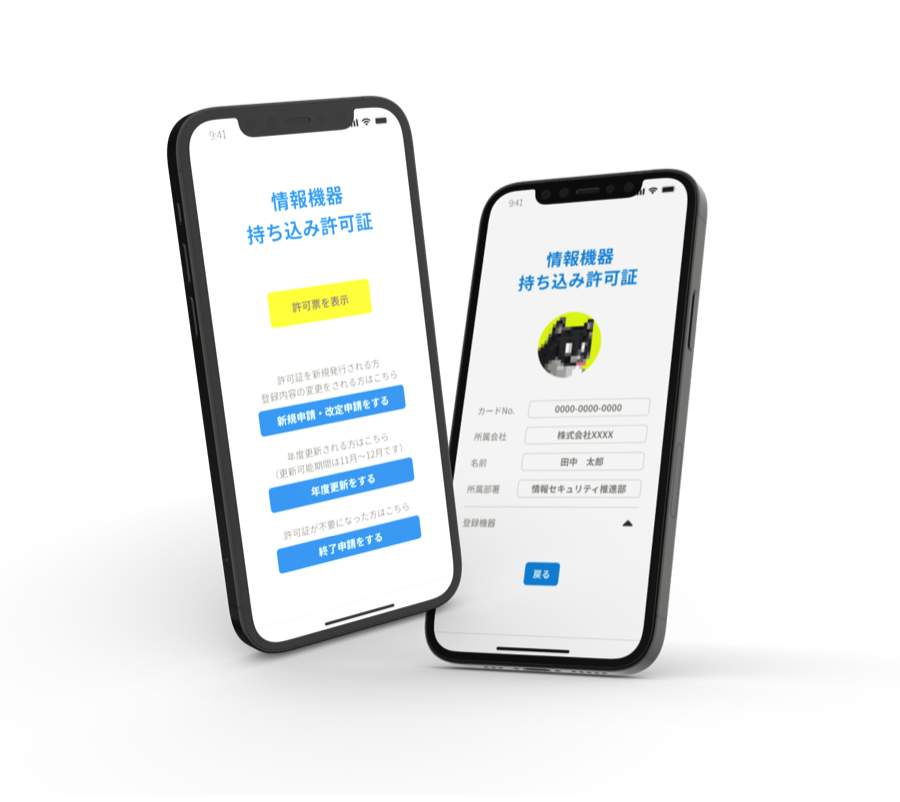
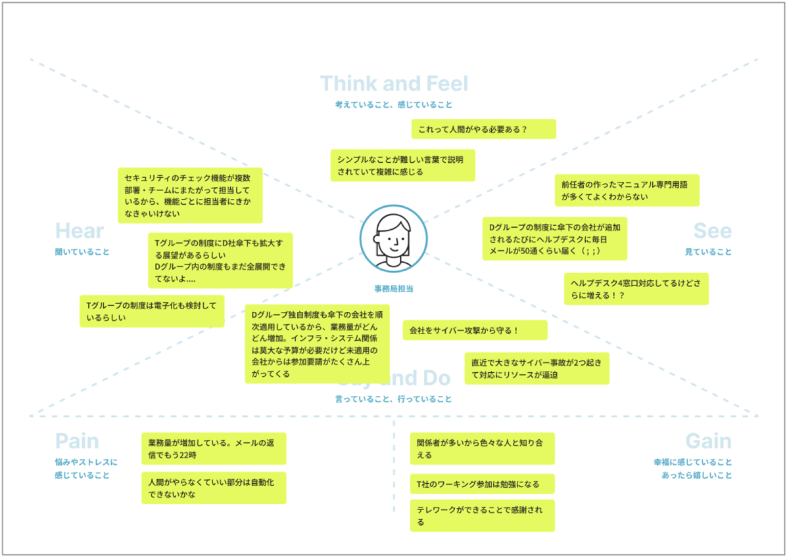
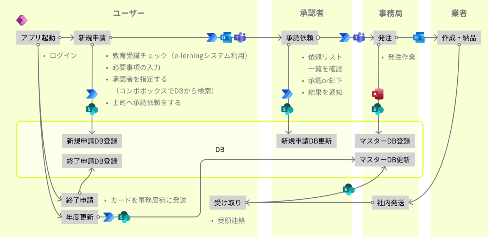
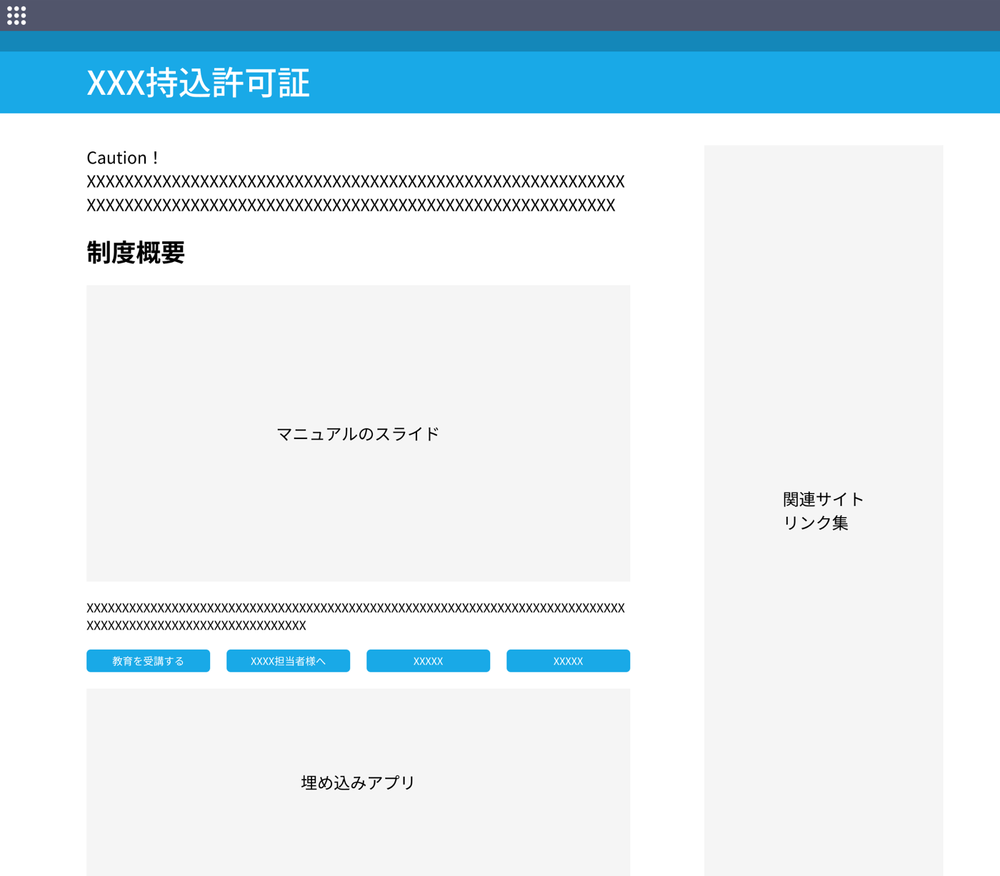
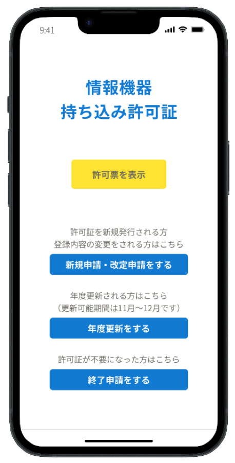
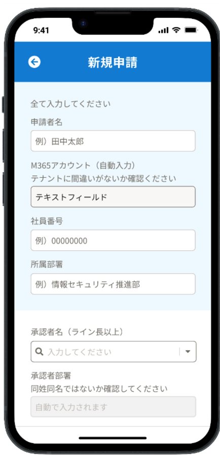
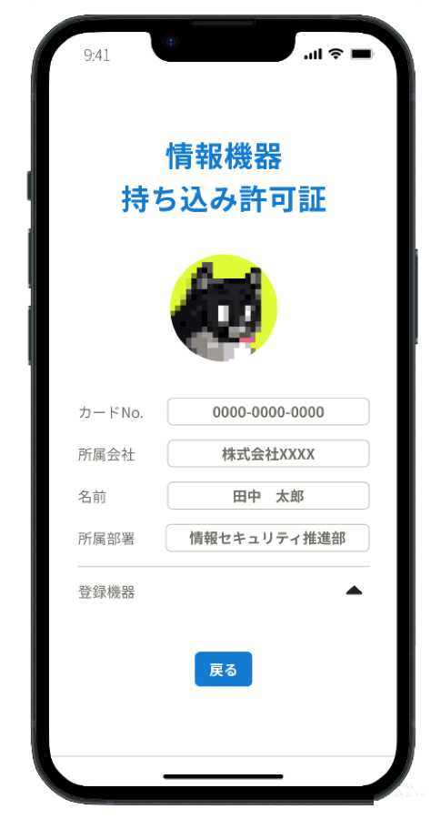

情報記憶媒体の持込み持出し許可証
UI/UXDENSO2021Shipped
個人プロジェクト
デンソー社員がトヨタ自動車グループ間で情報記憶媒体を会社構内に持込み・持出しする際に使用するアプリ。グループ間の連携を深め、時間がかかっていた申請手続きを簡易にする。
※機密事項を含まないよう、変更を加えて再現しています。実際の製品やサイトは掲載していません。

背景
デンソーでは、情報記憶媒体の持出し・持込み申請は紙の帳票を使用しており、複数の承認ステップや入門チェックなど、許可までに多大な時間がかかっていた。コロナ禍のテレワーク拡大で処理件数が増大し、スピーディーに対応できる簡易制度の考案が急務となっていた。当時一人で社内の帳票の処理、40万台以上のPCのセキュリティ監視、3つのヘルプデスクの窓口の担当など業務過多の状態に、メキシコ拠点とドイツ拠点でのセキュリティ事故も重なり多忙を極めていた。そんな中、親会社であるトヨタ自動車より、グループ間で相互に簡易持込みができる「ルール統一制度」への参加要請を受けた。少しでも効率化するため、アプリ開発し省人化することにした。
課題
ユーザー体験の課題
運営側の課題
プロセス
定期的に行われるトヨタ自動車各社とのグループ会議に上司の室長と2人でデンソー代表者として参加。各社と運用のすり合わせ、ルール共通化の最低ラインを決めた。すでに運用しているデンソー社内の申請の体験がよくないため、同じ道を辿らないよう現状の問題点を洗い出し、体験改善の足がかりとすることにした。
制約
トヨタ自動車側の求める共通条件
- 許可証は紙で指定の業者に発注(まとめて1ヶ月に一度だけ発注可能)
- 申請には、必要な教育を受講すること
- 年に一度更新を確認し、不要となったカードは回収すること
- セキュリティ要件を担保すること
- トヨタ自動車より支給されたExcelの帳票は使用してもしなくても良い(カスタマイズ可)
問題抽出
特性要因図を使い、自社独自制度のヘルプデスクに届く、ユーザーの要望やクレームを分類した。ユーザー視点と事務局側視点の両方から、下記の観点で問題を洗い出した。
・どこに時間がかかっているか ・何に不満を持っているか
現状の体験分析｜共感マップ
ユーザー視点と管理側視点の両方の体験を可視化してみた。現制度の良い体験・改善できそうな体験を洗い出した。

体験設計｜ユーザーシナリオ

改善方針決定
- 各部でのとりまとめをやめて個人申請に
- 受付・登録・更新作業を省人化
- 承認者や受付側がチェックする時点では申請を一覧で確認できるようにする
- 専用の申請アプリと情報発信サイトを構築する
フロー＆システム設計

使用ツール：Figma・Power Automate・Microsoft Teams・Outlook・Access・SharePoint
運用設計｜社内イントラ用サイト構築

申請に必要な条件をいくつか課している制度のため、冒頭に注意文を記載。マニュアルはスライド形式でサイトトップに埋め込み、画面遷移せずに読めるように変更。シンプルな構成で1ページ内に納め、見た目のボリュームを削減。運用フローはインフォグラフィック化し文字を削減。資料類直下にアプリを埋め込み、制度の理解から申請まで、サイト内で完結できるようにした。セキュリティ事故報告など、関連リンク集を右側にまとめて設置。
主要画面

入門時表示画面
運用途中で証明書が紙のカードから電子化することが確定したので画面を追加

新規登録画面
「Office 365 ユーザーコネクタ」登録済み情報は自動で入力

TOP画面
M365のアカウントに紐付き、自動でログイン
工夫した点・苦労した点
出向や2重籍の方も多いためアカウント切り替え間違いがないよう確認を入れた。教育コンテンツは年に一度教育を受講しないといけないため、新規登録時と年度更新時のみ受講確認のモーダルが出現するようにし、回答結果もDBに蓄積しエビデンスを記録した。
社員情報のDBがグループ内で統一されていなかったため上司や部署の情報は自動で入力させることができなかった。そのためコンボボックスで検索途中に選択肢を出し選べるようにした。同姓同名も多く、5〜6人くらいいるので部署名でも確認させるようにした。
入力内容に不備があった場合、入力完了直後にエラーメッセージを出し、修正内容がわかるようにした。承認依頼のボタンはエラーがなく必要事項が全て入力された場合にのみ活性化するようにした。
成果と振り返り
業務量を圧縮できた。他のメイン業務の傍少しづつ進めたので時間がかかってしまった。実装はプログラムに詰まった時は社内のエンジニアコミュニティに相談し助けてもらいながらも、一人でやり切ることができた。トヨタ自動車から途中紙での印刷をやめてアプリ化したいと定例で相談があった際、デンソーはすでにアプリ化していると言うことができて、他社のサンプルになれた。派遣社員だったが、色々な業務を率先して行なっていたため、部長報告や5社会議に代表者で出るなど普通できない体験ができた。個人的には入社時から比べて時給が2.5倍になっていたのが嬉しかった。